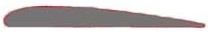

Aerodynamic lift
In order to understand what is Aerodynamic lift,
we need to know the concept of bernoulli's principal.
When a fluid or a gas is travelling at high speed,
low pressure is created around the gas or fluid.
When a fluid or gas is travelling at low speed,
high pressure is created around the gas or fluid.
Now let's get into the concept of aerodynamic lift.
aerodynamic lift is created when a airfoil shaped material
is travelling at high speed in the air.
airfoil shape looks like this:
When this material travels in the air,
air flows slowly in the bottom and fast in the top.
So, high pressure is created in the bottom and low pressure at the top.
Air always tries to go from high pressure to low pressure.
So when trying to go from high pressure bottom to low pressure top through the wings,
it pushes the wings upward. That is how aerodynamic lift is created.
And The lift depends on the tilt angle of the wings, if it is tilted forward,
the lift will be low and high if it is tilted backwards.
Note: wings are made in airfoil shape only.
Go to main menu